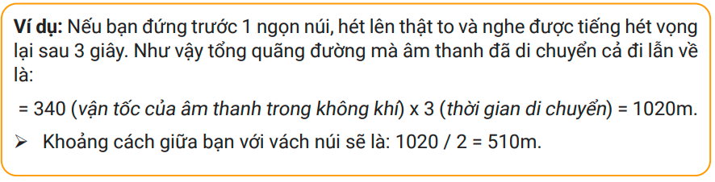
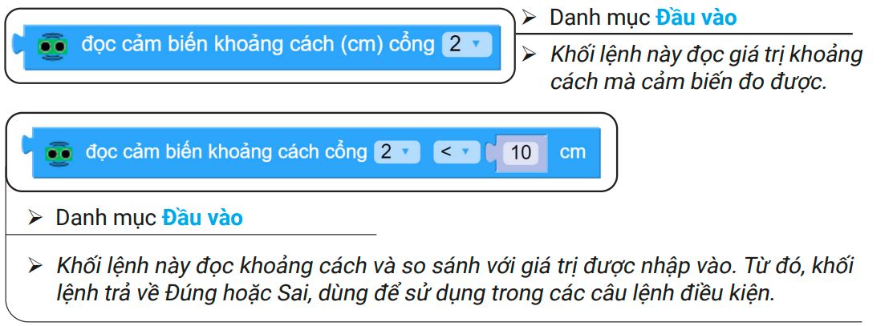
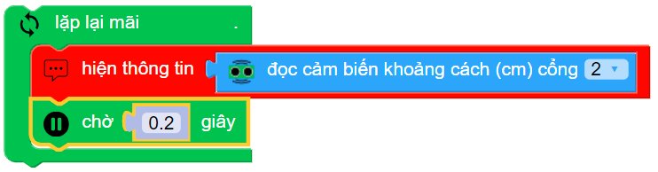

9. Bài 5: Robot né vật cản
Mục tiêu:
Hiểu về cảm biến khoảng cách và những cách lập trình cho robot vừa di chuyển vừa né tránh vật cản một cách thông minh.
1. Tốc độ của âm thanh
Như đã biết, âm thanh được truyền đi dưới dạng sóng. Tốc độ truyền đi của âm thanh trong không khí là 340 m/s nhưng có thể thay đổi tùy vào nhiệt độ và độ ẩm.
Khi ta phát một tín hiệu âm thanh và đo khoảng cách thời gian âm thanh đó vọng lại, ta hoàn toàn có thể tính được khoảng cách đến vật cản.
{kind=link}
2. Cảm biến khoảng cách
{kind=link}
xBot được trang bị một cảm biến khoảng cách có thể phát ra sóng siêu âm và đo thời gian phản hồi về:
Giúp phát hiện vật cản ở phía trước (nếu có)
Đo khoảng cách đến vật cản (tối đa 200cm)
{kind=link}
Nếu không có phản hồi thì nghĩa là không có vật cản. Nếu có thì cảm biến sẽ dựa vào khoảng thời gian phản hồi để tính ra khoảng cách.
3. Đọc trạng thái cảm biến
{kind=link}
Khối lệnh làm việc với cảm biến khoảng cách
{kind=link}
Viết chương trình và mở cửa sổ thông tin để xem kết quả:
{kind=link}
Bạn hãy đưa tay di chuyển lại gần hoặc ra xa dần cảm biến để xem sự thay đổi của kết quả (mở cửa số thông tin để xem kết quả in ra)
{kind=link}
4. Áp dụng cảm biến trong di chuyển
Robot dừng lại khi phát hiện vật cản
Trong chương trình này, chúng ta sẽ cho robot di chuyển về phía trước và dừn glại nếu phát hiện vật cản ở khảong cách nhỏ hơn 25cm.
{kind=link}
Khối lệnh chương trình
{kind=link}
Robot dừng và phát cảnh báo khi phát hiện vật cản
{kind=link}
Khối lệnh chương trình
{kind=link}
Robot tự động dừng
Chúng ta thử làm cho robot dừng lại một cách thông minh hơn nữa xem nào. Robot sẽ giảm tốc độ dần dần và dừng lại hẳn khi đến gần vật cản. Hành động này khá giống với chúng ta lái xe phải không nào.
{kind=link}
Bạn xây dựng các khối lệnh chương trình như sau:
Gắn khối lệnh làm tròn vào khối lệnh di chuyển, ở trước ô giá trị tốc đô. Khối lệnh này giúp bỏ bớt số lẻ khi chia
{kind=link}
Kéo khối lệnh các phép tính toán vào và đổi thành phép nhân
{kind=link}
Kéo khối lệnh đọc giá trị cảm biến vào bên trái phép nhân và nhận giá trị 2 vào ô bên phải

5. Robot biết né vật cản
Trong phần này, chúng ta sẽ viết chương trình cho robot vừa di chuyển vừa né vật cản một cách thông minh.
Nếu cảm biến phát hiện vật cản phía trước gần hơn 20cm thì robot rẽ phải
Nếu cảm biến phát hiện vật cản phía trước lớn hơn 20cm thì robot cứ đi thẳng
Sơ đồ xử lý như sau:
{kind=link}
Khối lệnh chương trình như sau:
{kind=link}
Né qua bên trái hoặc bên phải
Trong chương trình trên, robot luôn rẽ phải khi gặp vật cản. Chúng ta thử làm cho xBot thông minh hơn bằng cách rẽ trái hoặc phải một cách ngẫu nhiên bằng khối lệnh chọn một số bất kì từ mục Tính toán, thực hiện như sau:
Kết hợp khối lệnh chọn một số bất kì với câu lệnh điều kiện nếu… thực hiện:
{kind=link}
Sau khi thay vào chương trình cũ thì sẽ thành:
{kind=link}
6. Bài tập mở rộng
Robot thoát khỏi mê cung
Robot biết thoát khỏi mê cung là một bài toán rất phổ biến trong các cuộc thi robot.
{kind=link}
Hướng dẫn
Dựng mê cung:Dùng các đồ vật sắp xếp thành một mê cung như hình minh họa
Xây dựng chương trình:
Canh chỉnh thời gian rẽ => tìm thời gian rẽ góc vuông chính xác.
Xây dựng chương trình theo sơ đồ.
{kind=link}
Tìm chỗ trống đậu xe
Trong bài này, bạn hãy viết chương trình để robot có thể tìm và đậu xe vào vị trí còn trống bằng cách nhận diện vật cản
{kind=link}
Gợi ý cách làm
Dùng biến đếm để đếm số lần nhận vạch ngang
Mỗi lần đến vạch ngang, robot sẽ rẽ phải và xem vị trí đậu có trống hay không
Nếu ô trống, xe tiến tới và đậu xe
Nếu không, xe rẽ trái trở lại và đi đến vạch kế tiếp
7. Câu hỏi ôn tập
Chỉ ra cảm biến khoảng cách trên xBot. Công dụng của nó là gì?
Nêu nguyên lý hoạt động của cảm biến khoảng cách. Chỉ ra các khối lệnh làm việc với cảm biến khoảng cách trên OhStem App.
Cảm biến khoảng cách có thể được ứng dụng vào di chuyển xBot như thế nào? Kể tên ứng dụng và cách lập trình tương ứng.